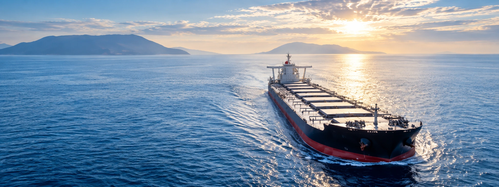

SHIP CHARTERING &
SHIP AGENCY SERVICES
SHIP CHARTERING SERVICES
Sama Almanar Transportation provides professional ship chartering solutions for bulk, breakbulk, project and general cargo movements. We support our customers in identifying suitable vessels, coordinating chartering requirements and managing the transportation process from loading port to final discharge port.
- Voyage Charter
- Time Charter
- Bulk Cargo Chartering
- Breakbulk & General Cargo Chartering
- Project Cargo Chartering
- Vessel Sourcing & Selection
- Loading & Discharge Coordination
- Port and Voyage Coordination
SHIP AGENCY SERVICES – IRAQ & TURKEY
Sama Almanar Transportation provides ship agency and port agency services in Iraq and Turkey, supporting vessel owners, operators, charterers and cargo interests throughout port calls. Our team coordinates with ports, terminals, authorities and operational partners to help ensure efficient vessel arrival, cargo operations and departure.
- Ship Agency Services
- Port Agency Services
- Vessel Arrival & Departure Coordination
- Port & Terminal Coordination
- Cargo Loading & Discharge Coordination
- Documentation & Operational Support
- Crew and Vessel Support Coordination
- Owner's and Charterer's Agency Support
- Husbandry Services Coordination
- Port Call Monitoring
SHIP AGENCY SERVICES IN IRAQ & TURKEY
Reliable local coordination for vessel calls and cargo operations across key ports in Iraq and Turkey.
SAMA Transportation arranges ship chartering for bulk, breakbulk, project and general cargo. From vessel sourcing to loading and discharge coordination, we provide tailored voyage and time charter solutions, supported by ship agency services in Iraq and Turkey.
{kind=link}
{kind=link}
{kind=link}
{kind=link}
{kind=link}
{kind=link}
{kind=link}
{kind=link}
{kind=link}